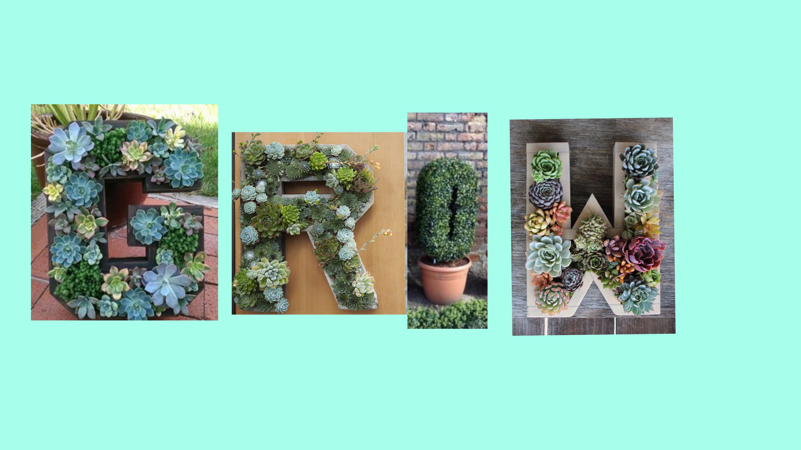
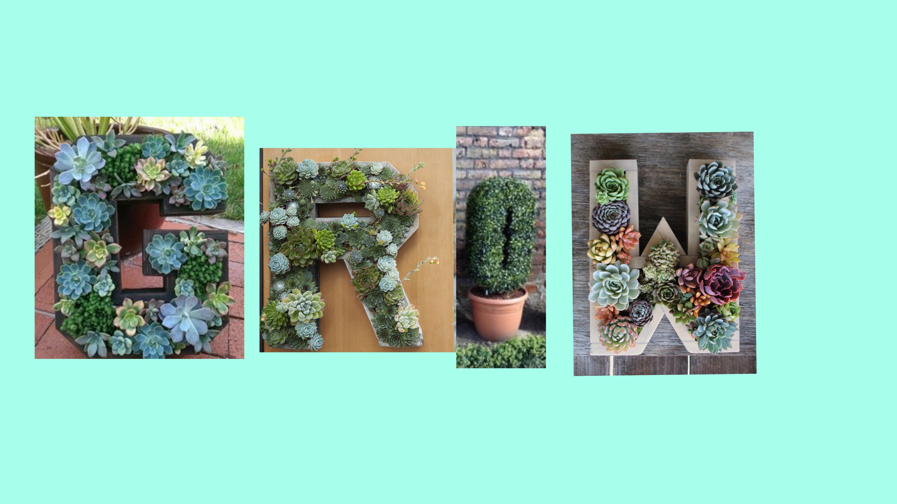

Melissa Charles is a second year Digital Media student on the cusp of graduation. I am personally someone who loves art, plants, and taking care of the environment. I would consider myself a diligent student and worker who is driven to succeed with an aptitude for balancing school work with regular work.
Social Media
Git
Github
HTML
Web Design
Video Production
Writing
Mobile Devices
Photoshop
User Interface Design
 width="574" height="260"
width="574" height="260"
width="574" height="260"
width="574" height="260"
width="574" height="260"
width="574" height="260"